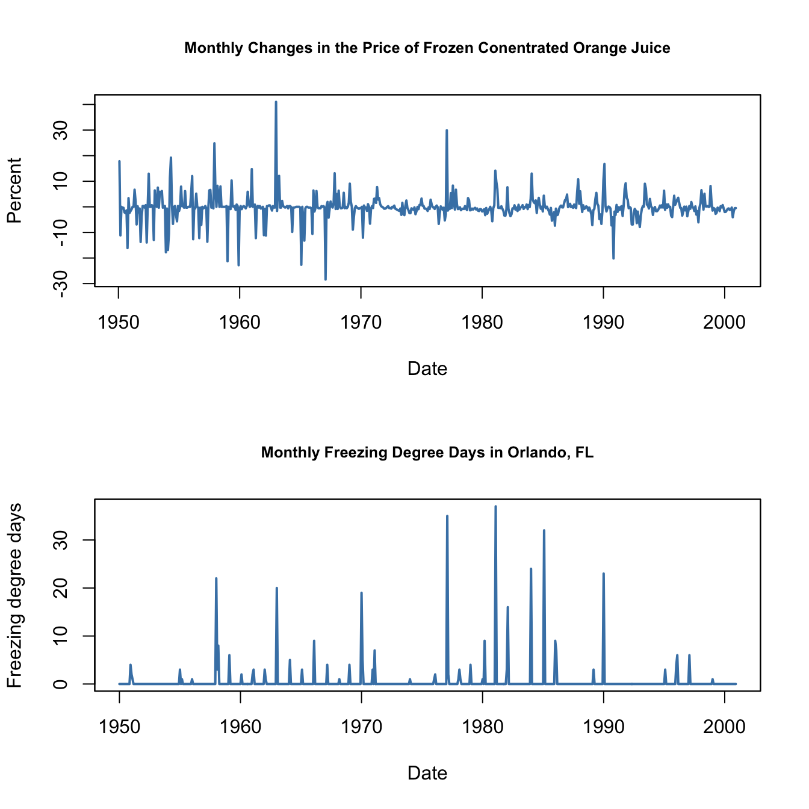

15 Estimation of Dynamic Causal Effects
It sometimes is of interest to know the size of current and future reaction of \(Y\) to a change in \(X\). This is called the dynamic causal effect on \(Y\) of a change in \(X\). In this Chapter we discuss how to estimate dynamic causal effects in R applications, where we investigate the dynamic effect of cold weather in Florida on the price of orange juice concentrate.
The discussion covers:
- estimation of distributed lag models,
- heteroskedasticity- and autocorrelation-consistent (HAC) standard errors,
- generalized least squares (GLS) estimation of ADL models.
To reproduce code examples, install the R packages listed below beforehand and make sure that the subsequent code chunk executes without any errors.
- AER (Christian Kleiber and Zeileis 2008),
- dynlm (Zeileis 2019),
- nlme (Pinheiro, Bates, and R Core Team 2023),
- quantmod (Ryan and Ulrich 2023),
- stargazer (Hlavac 2022).
15.1 The Orange Juice Data
The largest cultivation region for oranges in the U.S. is located in Florida which usually has ideal climate for the fruit growth. It thus is the source of almost all frozen juice concentrate produced in the country. However, from time to time and depending on their severeness, cold snaps cause a loss of harvests such that the supply of oranges decreases and consequently the price of frozen juice concentrate rises. The timing of the price increases is complicated: a cut in today’s supply of concentrate influences not just today’s price but also future prices because supply in future periods will decrease, too. Clearly, the magnitude of today’s and future prices increases due to freeze is an empirical question that can be investigated using a distributed lag model — a time series model that relates price changes to weather conditions.
To begin with the analysis, we reproduce Figure 15.1 of the book which displays plots of the price index for frozen concentrated orange juice, percentage changes in the price as well as monthly freezing degree days in Orlando, the center of Florida’s orange-growing region.
# load the frozen orange juice data set
data("FrozenJuice")
# compute the price index for frozen concentrated juice
FOJCPI <- FrozenJuice[, "price"]/FrozenJuice[, "ppi"]
FOJC_pctc <- 100 * diff(log(FOJCPI))
FDD <- FrozenJuice[, "fdd"]# convert series to xts objects
FOJCPI_xts <- as.xts(FOJCPI)
FDD_xts <- as.xts(FrozenJuice[, 3])
# Plot orange juice price index
plot(as.zoo(FOJCPI),
col = "steelblue",
lwd = 2,
xlab = "Date",
ylab = "Price index",
main = "Frozen Concentrated Orange Juice")
# divide plotting area
par(mfrow = c(2, 1))
# Plot percentage changes in prices
plot(as.zoo(FOJC_pctc),
col = "steelblue",
lwd = 2,
xlab = "Date",
ylab = "Percent",
cex.main=0.8,
main = "Monthly Changes in the Price of Frozen Conentrated Orange Juice")
# plot freezing degree days
plot(as.zoo(FDD),
col = "steelblue",
lwd = 2,
xlab = "Date",
ylab = "Freezing degree days",
cex.main=0.8,
main = "Monthly Freezing Degree Days in Orlando, FL")
Periods with a high amount of freezing degree days are followed by large month-to-month price changes. These coinciding movements motivate a simple regression of price changes (\(\%ChgOJC_t\)) on freezing degree days (\(FDD_t\)) to estimate the effect of an additional freezing degree day on the price in the current month. For this, as for all other regressions in this chapter, we use \(T=611\) observations (January 1950 to December 2000).
# simple regression of percentage changes on freezing degree days
orange_SR <- dynlm(FOJC_pctc ~ FDD)
coeftest(orange_SR, vcov. = vcovHAC)
#>
#> t test of coefficients:
#>
#> Estimate Std. Error t value Pr(>|t|)
#> (Intercept) -0.42095 0.18683 -2.2531 0.0246064 *
#> FDD 0.46724 0.13385 3.4906 0.0005167 ***
#> ---
#> Signif. codes: 0 '***' 0.001 '**' 0.01 '*' 0.05 '.' 0.1 ' ' 1Notice that the standard errors are computed using a “HAC” estimator of the variance-covariance matrix, see Chapter 14.5 for a discussion of this estimator.
\[\begin{align*} \widehat{\%ChgOJC_t} = -\underset{(0.19)}{0.42} + \underset{(0.13)}{0.47} FDD_t. \end{align*}\]
The estimated coefficient on \(FDD_t\) has the following interpretation: an additional freezing degree day in month \(t\) leads to a price increase 0f \(0.47\) percentage points in the same month.
To consider effects of cold snaps on the orange juice price over the subsequent periods, we include lagged values of \(FDD_t\) in our model which leads to a distributed lag regression model. We estimate a specification using a contemporaneous and six lagged values of \(FDD_t\) as regressors.
# distributed lag model with 6 lags of freezing degree days
orange_DLM <- dynlm(FOJC_pctc ~ FDD + L(FDD, 1:6))
coeftest(orange_DLM, vcov. = vcovHAC)
#>
#> t test of coefficients:
#>
#> Estimate Std. Error t value Pr(>|t|)
#> (Intercept) -0.692961 0.212445 -3.2618 0.0011700 **
#> FDD 0.471433 0.135195 3.4871 0.0005242 ***
#> L(FDD, 1:6)1 0.145021 0.081557 1.7782 0.0758853 .
#> L(FDD, 1:6)2 0.058364 0.058911 0.9907 0.3222318
#> L(FDD, 1:6)3 0.074166 0.047143 1.5732 0.1162007
#> L(FDD, 1:6)4 0.036304 0.029335 1.2376 0.2163670
#> L(FDD, 1:6)5 0.048756 0.031370 1.5543 0.1206535
#> L(FDD, 1:6)6 0.050246 0.045129 1.1134 0.2659919
#> ---
#> Signif. codes: 0 '***' 0.001 '**' 0.01 '*' 0.05 '.' 0.1 ' ' 1As the result we obtain
\[\begin{align} \begin{split} \widehat{\%ChgOJC_t} =& -\underset{(0.21)}{0.69} + \underset{(0.14)}{0.47} FDD_t + \underset{(0.08)}{0.15} FDD_{t-1} + \underset{(0.06)}{0.06} FDD_{t-2} + \underset{(0.05)}{0.07} FDD_{t-3} \\ &+ \underset{(0.03)}{0.04} FDD_{t-4} + \underset{(0.03)}{0.05} FDD_{t-5} + \underset{(0.05)}{0.05} FDD_{t-6}, \end{split} \tag{15.1} \end{align}\]
where the coefficient on \(FDD_{t-1}\) estimates the price increase in period \(t\) caused by an additional freezing degree day in the preceding month, the coefficient on \(FDD_{t-2}\) estimates the effect of an additional freezing degree day two month ago and so on. Consequently, the coefficients in (15.1) can be interpreted as price changes in current and future periods due to an unit increase in the current month’s freezing degree days.
15.2 Dynamic Causal Effects
This section of the book describes the general idea of a dynamic causal effect and how the concept of a randomized controlled experiment can be translated to time series applications, using several examples.
In general, for empirical attempts to measure a dynamic causal effect, the assumptions of stationarity (see Key Concept 14.5) and exogeneity must hold. In time series applications up until here we have assumed that the model error term has conditional mean zero given current and past values of the regressors. For estimation of a dynamic causal effect using a distributed lag model, assuming a stronger form termed strict exogeneity may be useful. Strict exogeneity states that the error term has mean zero conditional on past, present and future values of the independent variables.
The two concepts of exogeneity and the distributed lag model are summarized in Key Concept 15.1.
Key Concept 15.1
The Distributed Lag Model and Exogeneity
The general distributed lag model is \[\begin{align} Y_t = \beta_0 + \beta_1 X_t + \beta_2 X_{t-1} + \beta_3 X_{t-2} + \dots + \beta_{r+1} X_{t-r} + u_t, \tag{15.2} \end{align}\] where it is assumed that
\(X\) is an exogenous variable, \[E(u_t\vert X_t, X_{t-1}, X_{t-2},\dots) = 0.\]
- a \(X_t,Y_t\) have a stationary distribution.
- b \((Y_t,X_t)\) and \((Y_{t-j},X_{t-j})\) become independently distributed as \(j\) gets large.
Large outliers are unlikely. In particular, we need that all the variables have more than eight nonzero and finite moments — a stronger assumption than before (four finite nonzero moments) that is required for computation of the HAC covariance matrix estimator.
There is no perfect multicollinearity.
The distributed lag model may be extended to include contemporaneous and past values of additional regressors.
On the assumption of exogeneity
There is another form of exogeneity termed strict exogeneity which assumes \[E(u_t\vert \dots, X_{t+2},X_{t+1},X_t,X_{t-1},X_{t-2},\dots)=0,\] that is the error term has mean zero conditional on past, present and future values of \(X\). Strict exogeneity implies exogeneity (as defined in 1. above) but not the other way around. From this point on we will therefore distinguish between exogeneity and strict exogeneity.
Exogeneity as in 1. suffices for the OLS estimators of the coefficient in distributed lag models to be consistent. However, if the the assumption of strict exogeneity is valid, more efficient estimators can be applied.
15.3 Dynamic Multipliers and Cumulative Dynamic Multipliers
The following terminology regarding the coefficients in the distributed lag model (15.2) is useful for upcoming applications:
The dynamic causal effect is also called the dynamic multiplier. \(\beta_{h+1}\) in (15.2) is the \(h\)-period dynamic multiplier.
The contemporaneous effect of \(X\) on \(Y\), \(\beta_1\), is termed the impact effect.
The \(h\)-period cumulative dynamic multiplier of a unit change in \(X\) and \(Y\) is defined as the cumulative sum of the dynamic multipliers. In particular, \(\beta_1\) is the zero-period cumulative dynamic multiplier, \(\beta_1 + \beta_2\) is the one-period cumulative dynamic multiplier and so forth.
The cumulative dynamic multipliers of the distributed lag model (15.2) are the coefficients \(\delta_1,\delta_2,\dots,\delta_r,\delta_{r+1}\) in the modified regression \[\begin{align} Y_t =& \, \delta_0 + \delta_1 \Delta X_t + \delta_2 \Delta X_{t-1} + \dots + \delta_r \Delta X_{t-r+1} + \delta_{r+1} X_{t-r} + u_t, \tag{15.3} \end{align}\] and thus can be directly estimated using OLS which makes it convenient to compute their HAC standard errors. \(\delta_{r+1}\) is called the long-run cumulative dynamic multiplier.
It is straightforward to compute the cumulative dynamic multipliers for (15.1), the estimated distributed lag regression of changes in orange juice concentrate prices on freezing degree days, using the corresponding model object orange_DLM and the function cumsum().
# compute cumulative multipliers
cum_mult <-cumsum(orange_DLM$coefficients[-1])
# rename entries
names(cum_mult) <- paste(0:6, sep = "-", "period CDM")
cum_mult
#> 0-period CDM 1-period CDM 2-period CDM 3-period CDM 4-period CDM 5-period CDM
#> 0.4714329 0.6164542 0.6748177 0.7489835 0.7852874 0.8340436
#> 6-period CDM
#> 0.8842895Translating the distributed lag model with six lags of \(FDD\) to (15.3), we see that the OLS coefficient estimates in this model coincide with the multipliers stored in cum_mult.
# estimate cumulative dynamic multipliers using the modified regression
cum_mult_reg <-dynlm(FOJC_pctc ~ d(FDD) + d(L(FDD,1:5)) + L(FDD,6))
coef(cum_mult_reg)[-1]
#> d(FDD) d(L(FDD, 1:5))1 d(L(FDD, 1:5))2 d(L(FDD, 1:5))3 d(L(FDD, 1:5))4
#> 0.4714329 0.6164542 0.6748177 0.7489835 0.7852874
#> d(L(FDD, 1:5))5 L(FDD, 6)
#> 0.8340436 0.8842895As noted above, using a model specification as in (15.3) allows to easily obtain standard errors for the estimated dynamic cumulative multipliers.
# obtain coefficient summary that reports HAC standard errors
coeftest(cum_mult_reg, vcov. = vcovHAC)
#>
#> t test of coefficients:
#>
#> Estimate Std. Error t value Pr(>|t|)
#> (Intercept) -0.69296 0.23668 -2.9278 0.0035431 **
#> d(FDD) 0.47143 0.13583 3.4709 0.0005562 ***
#> d(L(FDD, 1:5))1 0.61645 0.13145 4.6896 3.395e-06 ***
#> d(L(FDD, 1:5))2 0.67482 0.16009 4.2151 2.882e-05 ***
#> d(L(FDD, 1:5))3 0.74898 0.17263 4.3387 1.682e-05 ***
#> d(L(FDD, 1:5))4 0.78529 0.17351 4.5260 7.255e-06 ***
#> d(L(FDD, 1:5))5 0.83404 0.18236 4.5737 5.827e-06 ***
#> L(FDD, 6) 0.88429 0.19303 4.5810 5.634e-06 ***
#> ---
#> Signif. codes: 0 '***' 0.001 '**' 0.01 '*' 0.05 '.' 0.1 ' ' 115.4 HAC Standard Errors
The error term \(u_t\) in the distributed lag model (15.2) may be serially correlated due to serially correlated determinants of \(Y_t\) that are not included as regressors. When these factors are not correlated with the regressors included in the model, serially correlated errors do not violate the assumption of exogeneity such that the OLS estimator remains unbiased and consistent.
However, autocorrelated standard errors render the usual homoskedasticity-only and heteroskedasticity-robust standard errors invalid and may cause misleading inference. HAC errors are a remedy.
Key Concept 15.2
HAC Standard errors
Problem:
If the error term \(u_t\) in the distributed lag model (15.2) is serially correlated, statistical inference that rests on usual (heteroskedasticity-robust) standard errors can be strongly misleading.
Solution:
Heteroskedasticity- and autocorrelation-consistent (HAC) estimators of the variance-covariance matrix circumvent this issue. There are R functions like vcovHAC() from the package sandwich which are convenient for computation of such estimators.
The package sandwich also contains the function NeweyWest(), an implementation of the HAC variance-covariance estimator proposed by Newey and West (1987).Consider the distributed lag regression model with no lags and a single regressor \(X_t\) \[\begin{align*} Y_t = \beta_0 + \beta_1 X_t + u_t, \end{align*}\] with autocorrelated errors. A brief derivation of \[\begin{align} \overset{\sim}{\sigma}^2_{\widehat{\beta}_1} = \widehat{\sigma}^2_{\widehat{\beta}_1} \widehat{f}_t, \tag{15.4} \end{align}\] the so-called Newey-West variance estimator for the variance of the OLS estimator of \(\beta_1\) is presented in Chapter 15.4 of the book. \(\widehat{\sigma}^2_{\widehat{\beta}_1}\) in (15.4) is the heteroskedasticity-robust variance estimate of \(\widehat{\beta}_1\) and \[\begin{align} \widehat{f}_t = 1 + 2 \sum_{j=1}^{m-1} \left(\frac{m-j}{m}\right) \overset{\sim}{\rho}_j \tag{15.5} \end{align}\] is a correction factor that adjusts for serially correlated errors and involves estimates of \(m-1\) autocorrelation coefficients \(\overset{\sim}{\rho}_j\). As it turns out, using the sample autocorrelation as implemented in acf() to estimate the autocorrelation coefficients renders (15.4) inconsistent, see pp. 650-651 of the book for a detailed argument. Therefore, we use a somewhat different estimator. For a time series \(X\) we have \[ \ \overset{\sim}{\rho}_j = \frac{\sum_{t=j+1}^T \hat v_t \hat v_{t-j}}{\sum_{t=1}^T \hat v_t^2}, \ \text{with} \ \hat v= (X_t-\overline{X}) \hat u_t. \] We implement this estimator in the function acf_c() below.
\(m\) in (15.5) is a truncation parameter to be chosen. A rule of thumb for choosing \(m\) is \[\begin{align} m = \left \lceil{0.75 \cdot T^{1/3}}\right\rceil. \tag{15.6} \end{align}\]
We simulate a time series that, as stated above, follows a distributed lag model with autocorrelated errors and then show how to compute the Newey-West HAC estimate of \(SE(\widehat{\beta}_1)\) using R. This is done via two separate but, as we will see, identical approaches: at first we follow the derivation presented in the book step-by-step and compute the estimate “manually”. We then show that the result is exactly the estimate obtained when using the function NeweyWest().
# function that computes rho tilde
acf_c <- function(x, j) {
return(
t(x[-c(1:j)]) %*% na.omit(Lag(x, j)) / t(x) %*% x
)
}
# simulate time series with serially correlated errors
set.seed(1)
N <- 100
eps <- arima.sim(n = N, model = list(ma = 0.5))
X <- runif(N, 1, 10)
Y <- 0.5 * X + eps
# compute OLS residuals
res <- lm(Y ~ X)$res
# compute v
v <- (X - mean(X)) * res
# compute robust estimate of beta_1 variance
var_beta_hat <- 1/N * (1/(N-2) * sum((X - mean(X))^2 * res^2) ) /
(1/N * sum((X - mean(X))^2))^2
# rule of thumb truncation parameter
m <- floor(0.75 * N^(1/3))
# compute correction factor
f_hat_T <- 1 + 2 * sum(
(m - 1:(m-1))/m * sapply(1:(m - 1), function(i) acf_c(x = v, j = i))
)
# compute Newey-West HAC estimate of the standard error
sqrt(var_beta_hat * f_hat_T)
#> [1] 0.04036208For the code to be reusable in other applications, we use sapply() to estimate the \(m-1\) autocorrelations \(\overset{\sim}{\rho}_j\).
# Using NeweyWest():
NW_VCOV <- NeweyWest(lm(Y ~ X),
lag = m - 1, prewhite = F,
adjust = T)
# compute standard error
sqrt(diag(NW_VCOV))[2]
#> X
#> 0.04036208By choosing lag = m-1 we ensure that the maximum order of autocorrelations used is \(m-1\) — just as in equation (15.5). Notice that we set the arguments prewhite = F and adjust = T to ensure that the formula (15.4) is used and finite sample adjustments are made.
We find that the computed standard errors coincide. Of course, a variance-covariance matrix estimate as computed by NeweyWest() can be supplied as the argument vcov in coeftest() such that HAC \(t\)-statistics and \(p\)-values are provided by the latter.
example_mod <- lm(Y ~ X)
coeftest(example_mod, vcov = NW_VCOV)
#>
#> t test of coefficients:
#>
#> Estimate Std. Error t value Pr(>|t|)
#> (Intercept) 0.542310 0.235423 2.3036 0.02336 *
#> X 0.423305 0.040362 10.4877 < 2e-16 ***
#> ---
#> Signif. codes: 0 '***' 0.001 '**' 0.01 '*' 0.05 '.' 0.1 ' ' 115.5 Estimation of Dynamic Causal Effects with Strictly Exogeneous Regressors
In general, the errors in a distributed lag model are correlated which necessitates usage of HAC standard errors for valid inference. If, however, the assumption of exogeneity (the first assumption stated in Key Concept 15.1) is replaced by strict exogeneity, that is, \[E(u_t\vert \dots, X_{t+1}, X_{t}, X_{t-1}, \dots) = 0,\] more efficient approaches than OLS estimation of the coefficients become available. For a general distributed lag model with \(r\) lags and AR(\(p\)) errors, these approaches are summarized in Key Concept 15.4.
Key Concept 15.4
Estimation of Dynamic Multipliers Under Strict Exogeneity
Consider the general distributed lag model with \(r\) lags and errors following an AR(\(p\)) process, \[\begin{align} Y_t =& \, \beta_0 + \beta_1 X_t + \beta_2 X_{t-1} + \dots + \beta_{r+1} X_{t-r} + u_t \tag{15.7} \\ u_t =& \, \phi_1 u_{t-1} + \phi u_{t-2} + \dots + \phi_p u_{t-p} + \overset{\sim}{u}_t. \tag{15.8} \end{align}\] Under strict exogeneity of \(X_t\), one may rewrite the above model in the ADL specification \[\begin{align*} Y_t =& \, \alpha_0 + \phi_1 Y_{t-1} + \phi_2 Y_{t-2} + \dots + \phi_p Y_{t-p} \\ &+ \, \delta_0 X_t + \delta_1 X_{t-1} + \dots + \delta_q X_{t-q} + \overset{\sim}{u}_t \end{align*}\] where \(q=r+p\) and compute estimates of the dynamic multipliers \(\beta_1, \beta_2, \dots, \beta_{r+1}\) using OLS estimates of \(\phi_1, \phi_2, \dots, \phi_p, \delta_0, \delta_1, \dots, \delta_q\).
An alternative is to estimate the dynamic multipliers using feasible GLS, that is to apply the OLS estimator to a quasi-difference specification of (15.7). Under strict exogeneity, the feasible GLS approach is the BLUE estimator for the dynamic multipliers in large samples.
On the one hand, as demonstrated in Chapter 15.5 of the book, OLS estimation of the ADL representation can be beneficial for estimation of the dynamic multipliers in large distributed lag models because it allows for a more parsimonious model that may be a good approximation to the large model. On the other hand, the GLS approach is more efficient than the ADL estimator if the sample size is large.We shortly review how the different representations of a small distributed lag model can be obtained and show how this specification can be estimated by OLS and GLS using R.
The model is \[\begin{align} Y_t = \beta_0 + \beta_1 X_t + \beta_2 X_{t-1} + u_t, \tag{15.9} \end{align}\] so a change in \(X\) is modeled to effect \(Y\) contemporaneously (\(\beta_1\)) and in the next period (\(\beta_2\)). The error term \(u_t\) is assumed to follow an AR(\(1\)) process,\[u_t = \phi_1 u_{t-1} + \overset{\sim}{u_t},\] where \(\overset{\sim}{u_t}\) is serially uncorrelated.
One can show that the ADL representation of this model is \[\begin{align} Y_t = \alpha_0 + \phi_1 Y_{t-1} + \delta_0 X_t + \delta_1 X_{t-1} + \delta_2 X_{t-2} + \overset{\sim}{u}_t, \tag{15.10} \end{align}\] with the restrictions \[\begin{align*} \beta_1 =& \, \delta_0, \\ \beta_2 =& \, \delta_1 + \phi_1 \delta_0, \end{align*}\] see p. 657 of the book.
Quasi-Differences
Another way of writing the ADL(\(1\),\(2\)) representation (15.10) is the quasi-difference model \[\begin{align} \overset{\sim}{Y}_t = \alpha_0 + \beta_1 \overset{\sim}{X}_t + \beta_2 \overset{\sim}{X}_{t-1} + \overset{\sim}{u}_t, \tag{15.11} \end{align}\] where \(\overset{\sim}{Y}_t = Y_t - \phi_1 Y_{t-1}\) and \(\overset{\sim}{X}_t = X_t - \phi_1 X_{t-1}\). Notice that the error term \(\overset{\sim}{u}_t\) is uncorrelated in both models and, as shown in Chapter 15.5 of the book, \[E(u_t\vert X_{t+1}, X_t, X_{t-1}, \dots) = 0,\] which is implied by the assumption of strict exogeneity.
We continue by simulating a time series of \(500\) observations using the model (15.9) with \(\beta_1 = 0.1\), \(\beta_2 = 0.25\), \(\phi = 0.5\) and \(\overset{\sim}{u}_t \sim \mathcal{N}(0,1)\) and estimate the different representations, starting with the distributed lag model (15.9).
# set seed for reproducibility
set.seed(1)
# simulate a time series with serially correlated errors
obs <- 501
eps <- arima.sim(n = obs-1 , model = list(ar = 0.5))
X <- arima.sim(n = obs, model = list(ar = 0.25))
Y <- 0.1 * X[-1] + 0.25 * X[-obs] + eps
X <- ts(X[-1])
# estimate the distributed lag model
dlm <- dynlm(Y ~ X + L(X))Let us check that the residuals of this model exhibit autocorrelation using acf().

In particular, the pattern reveals that the residuals follow an autoregressive process, as the sample autocorrelation function decays quickly for the first few lags and is probably zero for higher lag orders. In any case, HAC standard errors should be used.
# coefficient summary using the Newey-West SE estimates
coeftest(dlm, vcov = NeweyWest, prewhite = F, adjust = T)
#>
#> t test of coefficients:
#>
#> Estimate Std. Error t value Pr(>|t|)
#> (Intercept) 0.038340 0.073411 0.5223 0.601717
#> X 0.123661 0.046710 2.6474 0.008368 **
#> L(X) 0.247406 0.046377 5.3347 1.458e-07 ***
#> ---
#> Signif. codes: 0 '***' 0.001 '**' 0.01 '*' 0.05 '.' 0.1 ' ' 1OLS Estimation of the ADL Model
Next, we estimate the ADL(\(1\),\(2\)) model (15.10) using OLS. The errors are uncorrelated in this representation of the model. This statement is supported by a plot of the sample autocorrelation function of the residual series.
# estimate the ADL(2,1) representation of the distributed lag model
adl21_dynamic <- dynlm(Y ~ L(Y) + X + L(X, 1:2))
# plot the sample autocorrelaltions of residuals
acf(adl21_dynamic$residuals)
The estimated coefficients of adl21_dynamic$coefficients are not the dynamic multipliers we are interested in, but instead can be computed according to the restrictions in (15.10), where the true coefficients are replaced by the OLS estimates.
GLS Estimation
Strict exogeneity allows for OLS estimation of the quasi-difference model (15.11). The idea of applying the OLS estimator to a model where the variables are linearly transformed, such that the model errors are uncorrelated and homoskedastic, is called generalized least squares (GLS).
The OLS estimator in (15.11) is called the infeasible GLS estimator because \(\overset{\sim}{Y}\) and \(\overset{\sim}{X}\) cannot be computed without knowing \(\phi_1\), the autoregressive coefficient in the error AR(\(1\)) model, which is generally unknown in practice.
Assume we knew that \(\phi = 0.5\). We then may obtain the infeasible GLS estimates of the dynamic multipliers in (15.9) by applying OLS to the transformed data.
# GLS: estimate quasi-differenced specification by OLS
iGLS_dynamic <- dynlm(I(Y- 0.5 * L(Y)) ~ I(X - 0.5 * L(X)) + I(L(X) - 0.5 * L(X, 2)))
summary(iGLS_dynamic)
#>
#> Time series regression with "ts" data:
#> Start = 3, End = 500
#>
#> Call:
#> dynlm(formula = I(Y - 0.5 * L(Y)) ~ I(X - 0.5 * L(X)) + I(L(X) -
#> 0.5 * L(X, 2)))
#>
#> Residuals:
#> Min 1Q Median 3Q Max
#> -3.0325 -0.6375 -0.0499 0.6658 3.7724
#>
#> Coefficients:
#> Estimate Std. Error t value Pr(>|t|)
#> (Intercept) 0.01620 0.04564 0.355 0.72273
#> I(X - 0.5 * L(X)) 0.12000 0.04237 2.832 0.00481 **
#> I(L(X) - 0.5 * L(X, 2)) 0.25266 0.04237 5.963 4.72e-09 ***
#> ---
#> Signif. codes: 0 '***' 0.001 '**' 0.01 '*' 0.05 '.' 0.1 ' ' 1
#>
#> Residual standard error: 1.017 on 495 degrees of freedom
#> Multiple R-squared: 0.07035, Adjusted R-squared: 0.0666
#> F-statistic: 18.73 on 2 and 495 DF, p-value: 1.442e-08The feasible GLS estimator uses preliminary estimation of the coefficients in the presumed error term model, computes the quasi-differenced data and then estimates the model using OLS. This idea was introduced by Cochrane and Orcutt (1949) and can be extended by continuing this process iteratively. Such a procedure is implemented in the function r ttcode(“cochrane.orcutt()”) from the package r ttcode(“orcutt”).
X_t <- c(X[-1])
# create first lag
X_l1 <- c(X[-500])
Y_t <- c(Y[-1])
# iterated cochrane-orcutt procedure
# summary(cochrane.orcutt(lm(Y_t ~ X_t + X_l1)))Some more sophisticated methods for GLS estimation are provided with the package nlme. The function gls() can be used to fit linear models by maximum likelihood estimation algorithms and allows to specify a correlation structure for the error term.
# feasible GLS maximum likelihood estimation procedure
summary(gls(Y_t ~ X_t + X_l1, correlation = corAR1()))
#> Generalized least squares fit by REML
#> Model: Y_t ~ X_t + X_l1
#> Data: NULL
#> AIC BIC logLik
#> 1451.847 1472.88 -720.9235
#>
#> Correlation Structure: AR(1)
#> Formula: ~1
#> Parameter estimate(s):
#> Phi
#> 0.4668343
#>
#> Coefficients:
#> Value Std.Error t-value p-value
#> (Intercept) 0.03929124 0.08530544 0.460595 0.6453
#> X_t 0.11986994 0.04252270 2.818963 0.0050
#> X_l1 0.25287471 0.04252497 5.946500 0.0000
#>
#> Correlation:
#> (Intr) X_t
#> X_t 0.039
#> X_l1 0.037 0.230
#>
#> Standardized residuals:
#> Min Q1 Med Q3 Max
#> -3.00075518 -0.64255522 -0.05400347 0.69101814 3.28555793
#>
#> Residual standard error: 1.14952
#> Degrees of freedom: 499 total; 496 residualNotice that in this example, the coefficient estimates produced by GLS are somewhat closer to their true values and that the standard errors are the smallest for the GLS estimator.
15.6 Orange Juice Prices and Cold Weather
This section investigates the following two questions using the time series regression methods discussed here:
How persistent is the effect of a single freeze on orange juice concentrate prices?
Has the effect been stable over the whole time span?
We start by estimating dynamic causal effects with a distributed lag model where \(\%ChgOJC_t\) is regressed on \(FDD_t\) and 18 lags. A second model specification considers a transformation of the the distributed lag model which allows to estimate the 19 cumulative dynamic multipliers using OLS. The third model, adds 11 binary variables (one for each of the months from February to December) to adjust for a possible omitted variable bias arising from correlation of \(FDD_t\) and seasons by adding season(FDD) to the right hand side of the formula of the second model.
# estimate distributed lag models of frozen orange juice price changes
FOJC_mod_DM <- dynlm(FOJC_pctc ~ L(FDD, 0:18))
FOJC_mod_CM1 <- dynlm(FOJC_pctc ~ L(d(FDD), 0:17) + L(FDD, 18))
FOJC_mod_CM2 <- dynlm(FOJC_pctc ~ L(d(FDD), 0:17) + L(FDD, 18) + season(FDD))The above models include a large number of lags with default labels that correspond to the degree of differencing and the lag orders which makes it somewhat cumbersome to read the output. The regressor labels of a model object may be altered by overriding the attribute names of the coefficient section using the function attr(). Thus, for better readability we use the lag orders as regressor labels.
# set lag orders as regressor labels
attr(FOJC_mod_DM$coefficients, "names")[1:20] <- c("(Intercept)", as.character(0:18))
attr(FOJC_mod_CM1$coefficients, "names")[1:20] <- c("(Intercept)", as.character(0:18))
attr(FOJC_mod_CM2$coefficients, "names")[1:20] <- c("(Intercept)", as.character(0:18))Next, we compute HAC standard errors for each model using NeweyWest() and gather the results in a list which is then supplied as the argument se to the function stargazer(), see below. The sample consists of 612 observations:
According to (15.6), the rule of thumb for choosing the HAC standard error truncation parameter \(m\), we choose \[m = \left\lceil0.75 \cdot 612^{1/3} \right\rceil = \lceil6.37\rceil = 7.\] To check for sensitivity of the standard errors to different choices of the truncation parameter in the model that is used to estimate the cumulative multipliers, we also compute the Newey-West estimator for \(m=14\).
# gather HAC standard error errors in a list
SEs <- list(sqrt(diag(NeweyWest(FOJC_mod_DM, lag = 7, prewhite = F))),
sqrt(diag(NeweyWest(FOJC_mod_CM1, lag = 7, prewhite = F))),
sqrt(diag(NeweyWest(FOJC_mod_CM1, lag = 14, prewhite = F))),
sqrt(diag(NeweyWest(FOJC_mod_CM2, lag = 7, prewhite = F))))The results are then used to reproduce the outcomes presented in Table 15.1 of the book.
stargazer(FOJC_mod_DM , FOJC_mod_CM1, FOJC_mod_CM1, FOJC_mod_CM2,
title = "Dynamic Effects of a Freezing Degree Day on the Price of Orange Juice",
header = FALSE,
digits = 3,
column.labels = c("Dynamic Multipliers", rep("Dynamic Cumulative Multipliers", 3)),
dep.var.caption = "Dependent Variable: Monthly Percentage Change in Orange Juice Price",
dep.var.labels.include = FALSE,
covariate.labels = as.character(0:18),
omit = "season",
se = SEs,
no.space = T,
add.lines = list(c("Monthly indicators?","no", "no", "no", "yes"),
c("HAC truncation","7", "7", "14", "7")),
omit.stat = c("rsq", "f","ser")) | Dependent Variable: Monthly Percentage Change in Orange Juice Price | ||||
| Dynamic Multipliers | Dynamic Cumulative Multipliers | Dynamic Cumulative Multipliers | Dynamic Cumulative Multipliers | |
| (1) | (2) | (3) | (4) | |
| 0 | 0.508*** | 0.508*** | 0.508*** | 0.524*** |
| (0.137) | (0.137) | (0.139) | (0.142) | |
| 1 | 0.172** | 0.680*** | 0.680*** | 0.720*** |
| (0.088) | (0.134) | (0.130) | (0.142) | |
| 2 | 0.068 | 0.748*** | 0.748*** | 0.781*** |
| (0.060) | (0.165) | (0.162) | (0.173) | |
| 3 | 0.070 | 0.819*** | 0.819*** | 0.861*** |
| (0.044) | (0.181) | (0.181) | (0.190) | |
| 4 | 0.022 | 0.841*** | 0.841*** | 0.892*** |
| (0.031) | (0.183) | (0.184) | (0.194) | |
| 5 | 0.027 | 0.868*** | 0.868*** | 0.904*** |
| (0.030) | (0.189) | (0.189) | (0.199) | |
| 6 | 0.031 | 0.900*** | 0.900*** | 0.922*** |
| (0.047) | (0.202) | (0.208) | (0.210) | |
| 7 | 0.015 | 0.915*** | 0.915*** | 0.939*** |
| (0.015) | (0.205) | (0.210) | (0.212) | |
| 8 | -0.042 | 0.873*** | 0.873*** | 0.904*** |
| (0.034) | (0.214) | (0.218) | (0.219) | |
| 9 | -0.010 | 0.862*** | 0.862*** | 0.884*** |
| (0.051) | (0.236) | (0.245) | (0.239) | |
| 10 | -0.116* | 0.746*** | 0.746*** | 0.752*** |
| (0.069) | (0.257) | (0.262) | (0.259) | |
| 11 | -0.067 | 0.680** | 0.680** | 0.677** |
| (0.052) | (0.266) | (0.272) | (0.267) | |
| 12 | -0.143* | 0.537** | 0.537** | 0.551** |
| (0.076) | (0.268) | (0.271) | (0.272) | |
| 13 | -0.083* | 0.454* | 0.454* | 0.491* |
| (0.043) | (0.267) | (0.273) | (0.275) | |
| 14 | -0.057 | 0.397 | 0.397 | 0.427 |
| (0.035) | (0.273) | (0.284) | (0.278) | |
| 15 | -0.032 | 0.366 | 0.366 | 0.406 |
| (0.028) | (0.276) | (0.287) | (0.280) | |
| 16 | -0.005 | 0.360 | 0.360 | 0.408 |
| (0.055) | (0.283) | (0.293) | (0.286) | |
| 17 | 0.003 | 0.363 | 0.363 | 0.395 |
| (0.018) | (0.287) | (0.294) | (0.290) | |
| 18 | 0.003 | 0.366 | 0.366 | 0.386 |
| (0.017) | (0.293) | (0.301) | (0.295) | |
| Constant | -0.343 | -0.343 | -0.343 | -0.241 |
| (0.269) | (0.269) | (0.256) | (0.934) | |
| Monthly indicators? | no | no | no | yes |
| HAC truncation | 7 | 7 | 14 | 7 |
| Observations | 594 | 594 | 594 | 594 |
| Adjusted R2 | 0.109 | 0.109 | 0.109 | 0.101 |
| Note: | *p<0.1; **p<0.05; ***p<0.01 | |||
Table 15.1: Dynamic Effects of a Freezing Degree Day on the Price of Orange Juice
According to column (1) of Table 15.1, the contemporaneous effect of a freezing degree day is an increase of \(0.5\%\) in orange juice prices. The estimated effect is only \(0.17\%\) for the next month and close to zero for subsequent months. In fact, for all lags larger than 1, we cannot reject the null hypotheses that the respective coefficients are zero using individual \(t\)-tests. The model FOJC_mod_DM only explains little of the variation in the dependent variable (\(\bar{R}^2 = 0.11\)).
Columns (2) and (3) present estimates of the dynamic cumulative multipliers of model FOJC_mod_CM1. Apparently, it does not matter whether we choose \(m=7\) or \(m=14\) when computing HAC standard errors so we stick with \(m=7\) and the standard errors reported in column (2).
If the demand for orange juice is higher in winter, \(FDD_t\) would be correlated with the error term since freezing occur rather in winter so we would face omitted variable bias. The fourth model estimate, FOJC_mod_CM2, accounts for this possible issue by using an additional set of 11 monthly dummies. For brevity, estimates of the dummy coefficients are excluded from the output produced by stargazer (this is achieved by setting omit = ‘season’). We may check that the dummy for January was omitted to prevent perfect multicollinearity.
# estimates on mothly dummies
FOJC_mod_CM2$coefficients[-c(1:20)]
#> season(FDD)Feb season(FDD)Mar season(FDD)Apr season(FDD)May season(FDD)Jun
#> -0.9565759 -0.6358007 0.5006770 -1.0801764 0.3195624
#> season(FDD)Jul season(FDD)Aug season(FDD)Sep season(FDD)Oct season(FDD)Nov
#> 0.1951113 0.3644312 -0.4130969 -0.1566622 0.3116534
#> season(FDD)Dec
#> 0.1481589A comparison of the estimates presented in columns (2) and (4) indicates that adding monthly dummies has a negligible effect. Further evidence for this comes from a joint test of the hypothesis that the 11 dummy coefficients are zero. Instead of using linearHypothesis(), we use the function waldtest() and supply two model objects instead: unres_model, the unrestricted model object which is the same as FOJC_mod_CM2 (except for the coefficient names since we have modified them above) and res_model, the model where the restriction that all dummy coefficients are zero is imposed. res_model is conveniently obtained using the function update(). It extracts the argument formula of a model object, updates it as specified and then re-fits the model. By setting formula = . ~ . - season(FDD) we impose that the monthly dummies do not enter the model.
# test if coefficients on monthly dummies are zero
unres_model <- dynlm(FOJC_pctc ~ L(d(FDD), 0:17) + L(FDD, 18) + season(FDD))
res_model <- update(unres_model, formula = . ~ . - season(FDD))
waldtest(unres_model,
res_model,
vcov = NeweyWest(unres_model, lag = 7, prewhite = F))
#> Wald test
#>
#> Model 1: FOJC_pctc ~ L(d(FDD), 0:17) + L(FDD, 18) + season(FDD)
#> Model 2: FOJC_pctc ~ L(d(FDD), 0:17) + L(FDD, 18)
#> Res.Df Df F Pr(>F)
#> 1 563
#> 2 574 -11 0.9683 0.4743The \(p\)-value is \(0.47\) so we cannot reject the hypothesis that the coefficients on the monthly dummies are zero, even at the \(10\%\) level. We conclude that the seasonal fluctuations in demand for orange juice do not pose a serious threat to internal validity of the model.
It is convenient to use plots of dynamic multipliers and cumulative dynamic multipliers. The following two code chunks reproduce Figures 15.2 (a) and 15.2 (b) of the book which display point estimates of dynamic and cumulative multipliers along with upper and lower bounds of their \(95\%\) confidence intervals computed using the above HAC standard errors.
# 95% CI bounds
point_estimates <- FOJC_mod_DM$coefficients
CI_bounds <- cbind("lower" = point_estimates - 1.96 * SEs[[1]],
"upper" = point_estimates + 1.96 * SEs[[1]])[-1, ]
# plot the estimated dynamic multipliers
plot(0:18, point_estimates[-1],
type = "l",
lwd = 2,
col = "steelblue",
ylim = c(-0.4, 1),
xlab = "Lag",
ylab = "Dynamic multiplier",
main = "Dynamic Effect of FDD on Orange Juice Price")
# add a dashed line at 0
abline(h = 0, lty = 2)
# add CI bounds
lines(0:18, CI_bounds[,1], col = "darkred")
lines(0:18, CI_bounds[,2], col = "darkred")
Figure 15.1: Dynamic Multipliers
The \(95\%\) confidence intervals plotted in Figure 15.1 indeed include zero for lags larger than 1 such that the null of a zero multiplier cannot be rejected for these lags.
# 95% CI bounds
point_estimates <- FOJC_mod_CM1$coefficients
CI_bounds <- cbind("lower" = point_estimates - 1.96 * SEs[[2]],
"upper" = point_estimates + 1.96 * SEs[[2]])[-1,]
# plot estimated dynamic multipliers
plot(0:18, point_estimates[-1],
type = "l",
lwd = 2,
col = "steelblue",
ylim = c(-0.4, 1.6),
xlab = "Lag",
ylab = "Cumulative dynamic multiplier",
main = "Cumulative Dynamic Effect of FDD on Orange Juice Price",
cex.main=0.8)
# add dashed line at 0
abline(h = 0, lty = 2)
# add CI bounds
lines(0:18, CI_bounds[, 1], col = "darkred")
lines(0:18, CI_bounds[, 2], col = "darkred")
Figure 15.2: Dynamic Cumulative Multipliers
As can be seen from Figure 15.2, the estimated dynamic cumulative multipliers grow until the seventh month up to a price increase of about \(0.91\%\) and then decrease slightly to the estimated long-run cumulative multiplier of \(0.37\%\) which, however, is not significantly different from zero at the \(5\%\) level.
Have the dynamic multipliers been stable over time? One way to see this is to estimate these multipliers for different subperiods of the sample span. For example, consider periods 1950 - 1966, 1967 - 1983 and 1984 - 2000. If the multipliers are the same for all three periods the estimates should be close and thus the estimated cumulative multipliers should be similar, too. We investigate this by re-estimating FOJC_mod_CM1 for the three different time spans and then plot the estimated cumulative dynamic multipliers for the comparison.
# estimate cumulative multiplieres using different sample periods
FOJC_mod_CM1950 <- update(FOJC_mod_CM1, start = c(1950, 1), end = c(1966, 12))
FOJC_mod_CM1967 <- update(FOJC_mod_CM1, start = c(1967, 1), end = c(1983, 12))
FOJC_mod_CM1984 <- update(FOJC_mod_CM1, start = c(1984, 1), end = c(2000, 12))# plot estimated dynamic cumulative multipliers (1950-1966)
plot(0:18, FOJC_mod_CM1950$coefficients[-1],
type = "l",
lwd = 2,
col = "steelblue",
xlim = c(0, 20),
ylim = c(-0.5, 2),
xlab = "Lag",
ylab = "Cumulative dynamic multiplier",
main = "Cumulative Dynamic Effect for Different Sample Periods")
# plot estimated dynamic multipliers (1967-1983)
lines(0:18, FOJC_mod_CM1967$coefficients[-1], lwd = 2)
# plot estimated dynamic multipliers (1984-2000)
lines(0:18, FOJC_mod_CM1984$coefficients[-1], lwd = 2, col = "darkgreen")
# add dashed line at 0
abline(h = 0, lty = 2)
# add annotations
text(18, -0.24, "1984 - 2000")
text(18, 0.6, "1967 - 1983")
text(18, 1.2, "1950 - 1966")
Clearly, the cumulative dynamic multipliers have changed considerably over time. The effect of a freeze was stronger and more persistent in the 1950s and 1960s. For the 1970s the magnitude of the effect was lower but still highly persistent. We observe an even lower magnitude for the final third of the sample span (1984 - 2000) where the long-run effect is much less persistent and essentially zero after a year.
A QLR test for a break in the distributed lag regression of column (1) in Table 15.1 with \(15\%\) trimming using a HAC variance-covariance matrix estimate supports the conjecture that the population regression coefficients have changed over time.
# set up a range of possible break dates
tau <- c(window(time(FDD),
time(FDD)[round(612/100*15)],
time(FDD)[round(612/100*85)]))
# initialize the vector of F-statistics
Fstats <- numeric(length(tau))
# the restricted model
res_model <- dynlm(FOJC_pctc ~ L(FDD, 0:18))
# estimation, loop over break dates
for(i in 1:length(tau)) {
# set up dummy variable
D <- time(FOJC_pctc) > tau[i]
# estimate DL model with intercations
unres_model <- dynlm(FOJC_pctc ~ D * L(FDD, 0:18))
# compute and save F-statistic
Fstats[i] <- waldtest(res_model,
unres_model,
vcov = NeweyWest(unres_model, lag = 7, prewhite = F))$F[2]
}Note that this code takes a couple of seconds to run since a total of length(tau) regressions with \(40\) model coefficients each are estimated.
The QLR statistic is \(36.77\). From Table 14.5 of the book we see that the \(1\%\) critical value for the QLR test with \(15\%\) trimming and \(q=20\) restrictions is \(2.43\). Since this is a right-sided test, the QLR statistic clearly lies in the region of rejection so we can discard the null hypothesis of no break in the population regression function.
See Chapter 15.7 of the book for a discussion of empirical examples where it is questionable whether the assumption of (past and present) exogeneity of the regressors is plausible.
Summary
We have seen how R can be used to estimate the time path of the effect on \(Y\) of a change in \(X\) (the dynamic causal effect on \(Y\) of a change in \(X\)) using time series data on both. The corresponding model is called the distributed lag model. Distributed lag models are conveniently estimated using the function dynlm() from the package dynlm.
The regression error in distributed lag models is often serially correlated such that standard errors which are robust to heteroskedasticity and autocorrelation should be used to obtain valid inference. The package sandwich provides functions for computation of so-called HAC covariance matrix estimators, for example vcovHAC() and NeweyWest().
When \(X\) is strictly exogeneous, more efficient estimates can be obtained using an ADL model or by GLS estimation. Feasible GLS algorithms can be found in the R packages r ttcode(“orcutt”) and nlme. Chapter 15.7 of the book emphasizes that the assumption of strict exogeneity is often implausible in empirical applications.